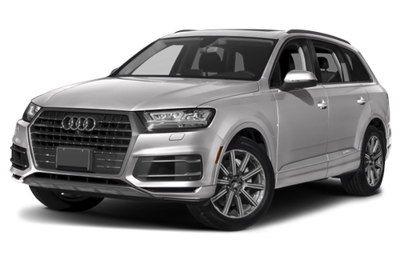

Discover Audi as a brand, company and employer on our international website. Here you will find information about models and technologies.
Login
 Pass
Pass
Pass
Do Audi's last long ?
17.09.2018

But with a reasonable amount of maintenance, a modern vehicle can last to somewhere between a 150,000 to 200,000 miles. That number is based on taking really good care of the car, doing all of the maintenance that is required and recommended; and replacing your audi parts as soon as they start to wear out.
- Read more
- Any comments
- Log in
- Enter
What is a Audi b5?
02.11.2018
It was built on the Volkswagen Group B5 (PL45) platform, which it shared with the fourth generation Volkswagen Passat (B5, Typ 3B). It had a front-mounted longitudinal engine and front-wheel drive. Many variations of the A4 were also available with Audi's quattro four-wheel drive system.
- Read more
- Any comments
- Log in
- Enter
What is a Audi b8?
07.01.2018
In Europe, the wide range of Audi A4 saloon and Avant estate are available with the 1.8 TFSI, 2.0 TFSI gasoline engine, as well as 2.0 TDI, 2.0 TDIe, and 3.0 TDI diesel motor. Trim levels are Attraction, Ambition, and Ambiente. In the UK, the A4 range is offered in SE, SE Technik, Technik, S line, and Black Edition model grades. All wheel drive quattro are offered in most engine and grade combinations.
- Read more
- Any comments
- Log in
- Enter
All rights reserved